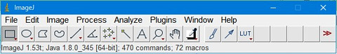
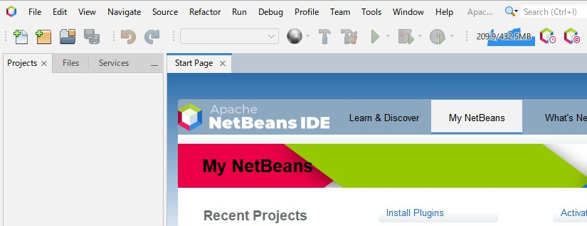

"NetBeans"のインストール方法について述べます。 以下の2つをインストールします。
OSはWindows 64ビットとします。
JDKのインストール
JDKとは、Javaのソフトウェア開発キットです。NetBeansに必要となるものです。
とりあえず、すでにインストールされている"ImageJ"を起動します。

起動直後に、利用しているJavaのバージョンが表示されます。
上の場合、「Java 1.80_345」と表示されているので、「Java 8 Update 345」で動作していることが分かります。
「JDK 8u345」を利用して開発することにします。
現在、JDKはORACLEだけでなく様々な選択肢があります。
（「きしだ なおき」氏の「Javaのサポートについてのまとめ2018」の説明が分かりやすいです)
ImageJ 1.53tにおいて、Azul Systemsが提供しているOpenJDKを使っているようです。 こちらからzipをダウンロードしてください。
他のバージョンが欲しい場合は、以下の選択を変更してください。
ダウンロードしたzipを展開し、binフォルダなどが収納されているフォルダを「jidk8.0.345」などとして「C:\Program Files\Java」にコピーしてください。
NetBeansのインストール
NetBeansの開発は、バージョン9以降、OracleからApacheに変わっています。
バージョン9以降、日本語メニューには正式対応していませんが、日本語化プラグインがあります。
Apache NetBeans 15 + 日本語化プラグイン をインストールしようと思います。
まず、こちらからNetBeansのインストーラをダウンロードし、インストールしてください。
基本何も変更せずに「Next」で良いです。
ただし、以下のダイアログで上記JDKを選択しておけば、NetBeans上でデフォルトのJDKとして表示されますので便利かもしれません。
次に、日本語化プラグイン は「Junichi Yamamoto」氏のプラグインを利用させて頂きます。
こちらから適切なバージョンのnbmファイルをダウンロードしてください。
私は、「org-apache-netbeans-localise-ja-0.0.4-no-mnemonic.nbm 」をダウンロードしました。
ニーモニックとは、Windowsのメニューにおいて、の部分です。ニーモニックが必要無い場合は、「-no-mnemonic」を選択します。
NetBeansを起動します。

以下のような手順でインストールします。
後は、ライセンス同意などを行い、再起動します。
日本語だと安心します。
ちなみに、ORACLE最終版のNetBeans8.2のインストーラはすぐには見つからないと思います。
2022/12において、パッケージ管理ツール「Chocolatey」からインストールすることができます。
「Chocolatey」をインストール（手順はこちら）して、管理者権限のPowerShellで以下を実行します。
> choco install NetBeans以下で検索することも可能です。
（今後無くなってしまうかもしれませんので、確認方法として）> choco search netbeans Chocolatey v1.2.1 NetBeans 8.2.20171030 [Approved] <-ここ！ netbeans-web 8.2 [Approved] - Possibly broken netbeans-jee 8.1 [Approved] Downloads cached for licensed users - Possibly broken for FOSS users (due to original download location changes by vendor) netbeans-php 8.2 [Approved] netbeans-jse 8.2 [Approved] netbeans-cpp 8.2 [Approved] netbeans-html5 8.2 [Approved] apache-netbeans.portable 15.0 [Approved] Downloads cached for licensed users webswing 2.5.10 [Approved] Downloads cached for licensed users - Possibly broken for FOSS users (due to original download location changes by vendor) bluej 5.1.0 [Approved] Downloads cached for licensed users gephi 0.9.7 [Approved] 11 packages found.